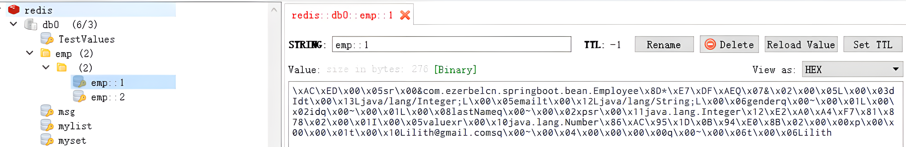
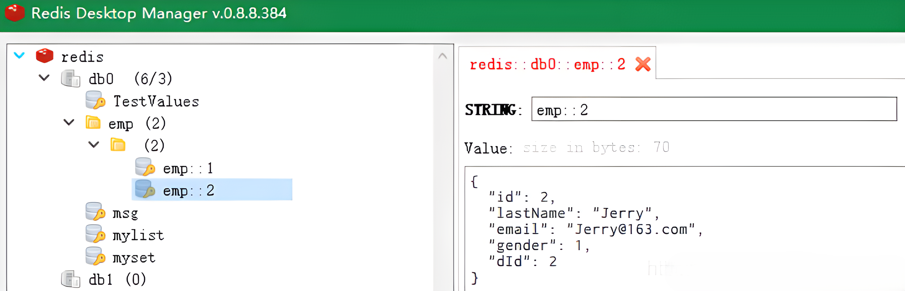

SpringBoot（10-Cache缓存使用） | 总字数: 5.1k | 阅读时长: 22分钟 | 浏览量: |
SpringBoot 整合 Cache
注解及方法
名称
解释
Cache
缓存接口，定义缓存操作。实现有：RedisCache、EhCacheCache、ConcurrentMapCache 等
CacheManager
缓存管理器，管理各种缓存（cache）组件，用于指定使用哪个缓存管理器，非必需，只有当有多个时才需要使用
@Cacheable
主要针对方法配置，能够根据方法的请求参数对其进行缓存
@CacheEvict
清空缓存
@CachePut
保证方法被调用，又希望结果被缓存。 与@Cacheable 区别在于是否每次都调用方法，常用于更新
@EnableCaching
开启基于注解的缓存，用于指定 key 生成器，非必需。若需要指定一个自定义的 key 生成器，我们需要去实现 org.springframework.cache.interceptor.KeyGenerator 接口，并使用该参数来指定。需要注意的是：该参数与 key 是互斥的
keyGenerator
缓存数据时 key 生成策略
serialize
缓存数据时 value 序列化策略
@CacheConfig
统一配置本类的缓存注解的属性
Cache
缓存接口，定义缓存操作。实现有：RedisCache、EhCacheCache、ConcurrentMapCache 等；
具体意义：每一个 Cache 中存储一个缓存信息，比如说：用户信息缓存（user_cache）、商品信息缓存（product_cache）…，然后每一个 cache 中又会用具体的缓存 key 做具体区分，如：用户信息缓存中，根据用户 id 区分，那么用户 id 就是 user_cache 中的 key；product_cache 中又以商品 id 作为 key 区分具体缓存记录；
1 2 3 4 5 6 7 8 9 10 11 12 13 14 15 16 17 18 19 20 21 22 23 24 25 26 27 28 29 30 31 32 33 34 35 36 37 38 39 40 41 42 43 44 45 46 47 48 49 50 51 52 53 54 55 56 57 58 59 60 61 62 63 64 public interface Cache { String getName () ; Object getNativeCache () ; @Nullable ValueWrapper get (Object key) ; @Nullable <T> T get (Object key, @Nullable Class<T> type) ; @Nullable <T> T get (Object key, Callable<T> valueLoader) ; void put (Object key, @Nullable Object value) ; @Nullable default ValueWrapper putIfAbsent (Object key, @Nullable Object value) { ValueWrapper existingValue = get(key); if (existingValue == null ) { put(key, value); } return existingValue; } void evict (Object key) ; default boolean evictIfPresent (Object key) { evict(key); return false ; } void clear () ; default boolean invalidate () { clear(); return false ; } @FunctionalInterface interface ValueWrapper { @Nullable Object get () ; } @SuppressWarnings("serial") class ValueRetrievalException extends RuntimeException { @Nullable private final Object key; public ValueRetrievalException (@Nullable Object key, Callable<?> loader, Throwable ex) { super (String.format("Value for key '%s' could not be loaded using '%s'" , key, loader), ex); this .key = key; } @Nullable public Object getKey () { return this .key; } } }
CacheManager
缓存管理器，管理各个缓存(Cache)组件，针对不同的业务场景，可以定义多个不同的 CacheManager 管理具体 cache 数据；
比如说：我们可以通过 CacheManager 加载各个 cache，并且可以初始化各个 cache 的参数设置（如过期时间等），我们缓存数据需要指定 cache manager 跟具体被其管理的 cache，这样才可以正确缓存
1 2 3 4 5 6 7 8 public interface CacheManager { Cache getCache (String name) ; Collection<String> getCacheNames () ; }
@EnableCaching
开启基于注解的缓存，属于 spring4.x 之后的 spring 缓存注解；
@CacheConfig
在类上使用@CacheConfig 统一的配置缓存的信息，包括指定 cacheManager、具体 cache 等；
1 2 3 4 5 6 7 8 9 10 11 12 13 @Target(ElementType.TYPE) @Retention(RetentionPolicy.RUNTIME) @Documented public @interface CacheConfig { String[] cacheNames() default {}; String keyGenerator () default "" ; String cacheManager () default "" ; String cacheResolver () default "" ; }
@Cacheable
主要针对方法配置，能够根据方法的请求参数对其结果进行缓存，具体缓存的 key 可以指定；
1 2 3 4 5 6 7 8 9 10 11 12 13 14 15 16 17 18 19 20 21 22 23 24 25 26 27 28 29 30 31 32 33 @Target({ElementType.METHOD, ElementType.TYPE}) @Retention(RetentionPolicy.RUNTIME) @Inherited @Documented public @interface Cacheable { @AliasFor("cacheNames") String[] value() default {}; @AliasFor("value") String[] cacheNames() default {}; String key () default "" ; String keyGenerator () default "" ; String cacheManager () default "" ; String cacheResolver () default "" ; String condition () default "" ; String unless () default "" ; boolean sync () default false ; }
@CachePut
保证方法调用，又能将结果缓存，可以用于刷新缓存，同样 key 需要指定，需要跟@Cacheable 中制定的 key 对应保持一致，同样是将方法返回结果进行保存，所以同样需要跟@Cacheable 方法中的结果返回类型一致；
1 2 3 4 5 6 7 8 9 10 11 12 13 14 15 16 17 18 19 20 21 22 23 24 @Target({ElementType.TYPE, ElementType.METHOD}) @Retention(RetentionPolicy.RUNTIME) @Inherited @Documented public @interface CachePut { @AliasFor("cacheNames") String[] value() default {}; @AliasFor("value") String[] cacheNames() default {}; String key () default "" ; String keyGenerator () default "" ; String cacheManager () default "" ; String cacheResolver () default "" ; String condition () default "" ; String unless () default "" ; }
@CacheEvict
针对指定的 key，清空缓存；
1 2 3 4 5 6 7 8 9 10 11 12 13 14 15 16 17 18 19 20 21 22 23 24 25 26 27 @Target({ElementType.METHOD, ElementType.TYPE}) @Retention(RetentionPolicy.RUNTIME) @Inherited @Documented public @interface CacheEvict { @AliasFor("cacheNames") String[] value() default {}; @AliasFor("value") String[] cacheNames() default {}; String key () default "" ; String keyGenerator () default "" ; String cacheManager () default "" ; String cacheResolver () default "" ; boolean allEntries () default false ; boolean beforeInvocation () default false ; }
参数信息
@Cacheable/@CachePut/@CacheEvict 主要的参数
名称
解释
value
缓存的名称，在 spring 配置文件中定义，必须指定至少一个 例如： @Cacheable(value =”mycache”) 或者 @Cacheable(value ={”cache1”,”cache2”})
key
缓存的 key，可以为空，如果指定要按照 SpEL 表达式编写，如果不指定，则缺省按照方法的所有参数进行组合，例如：@Cacheable(value =”testcache”, key =”#id”)
condition
缓存的条件，可以为空，使用 SpEL 编写，返回 true 或者 false，只有为 true 才进行缓存/清除缓存，例如：@Cacheable(value =”testcache”, condition =”#userName.length()> 2”)
unless
否定缓存，当条件结果为 TRUE 时，就不会缓存。 @Cacheable(value =”testcache”, unless =”#userName.length()> 2”)
allEntries (@CacheEvict )
是否清空所有缓存内容，缺省为 false，如果指定为 true，则方法调用后将立即清空所有缓存，例如：@CachEvict(value =”testcache”, allEntries = true)
beforeInvocation (@CacheEvict)
是否在方法执行前就清空，缺省为 false，如果指定为 true，则在方法还没有执行的时候就清空缓存，缺省情况下，如果方法执行抛出异常，则不会清空缓存，例如： @CachEvict(value =”testcache”，beforeInvocation = true)
SpEl 上下文数据
Spring Cache 提供了一些供我们使用的 SpEL 上下文数据，下表直接摘自 Spring 官方文档：
名称
位置
描述
示例
methodName
root 对象
当前被调用的方法名
#root.methodname
method
root 对象
当前被调用的方法
#root.method.name
target
root 对象
当前被调用的目标对象实例
#root.target
targetClass
root 对象
当前被调用的目标对象的类
#root.targetClass
args
root 对象
当前被调用的方法的参数列表
#root.args[0]
caches
root 对象
当前方法调用使用的缓存列表
#root.caches[0].name
Argument Name
执行上下文
当前被调用的方法的参数，如 findArtisan(Artisan artisan), 可以通过#artsian.id 获得参数
#artsian.id
result
执行上下文
方法执行后的返回值（仅当方法执行后的判断有效，如 unless cacheEvict 的 beforeInvocation = false）
#result
要使用 root 对象的属性作为 key 时我们也可以将“#root”省略，因为 Spring 默认使用的就是 root 对象的属性，如：@Cacheable(key = “targetClass+methodName+#p0”)
使用方法参数时我们可以直接使用“#参数名”或者“#p 参数 index”，如：@Cacheable(value = “users”, key = “#id”)，@Cacheable(value = “user”, key = “#p0”)
CacheManger 缓存类型
针对不同的缓存技术，需要实现不同的 cacheManager，Spring 定义了如下的 cacheManger 实现。
CacheManger
描述
SimpleCacheManager
使用简单的 Collection 来存储缓存，主要用于测试
ConcurrentMapCacheManager
使用 ConcurrentMap 作为缓存技术（默认），需要显式的删除缓存，无过期机制
NoOpCacheManager
仅测试用途，不会实际存储缓存
EhCacheCacheManager
使用 EhCache 作为缓存技术，以前在 hibernate 的时候经常用
GuavaCacheManager
使用 google guava 的 GuavaCache 作为缓存技术(1.5 版本已不建议使用）
CaffeineCacheManager
是使用 Java8 对 Guava 缓存的重写，spring5（springboot2）开始用 Caffeine 取代 guava
HazelcastCacheManager
使用 Hazelcast 作为缓存技术
JCacheCacheManager
使用 JCache 标准的实现作为缓存技术，如 Apache Commons JCS
RedisCacheManager
使用 Redis 作为缓存技术
常规的 SpringBoot 已经为我们自动配置了 EhCache、Collection、Guava、ConcurrentMap 等缓存，默认使用 ConcurrentMapCacheManager。SpringBoot 的 application.properties 配置文件，使用 spring.cache 前缀的属性进行配置。
ConcurrentMap Cache
Spring boot 默认使用的是 SimpleCacheConfiguration，即使用 ConcurrentMapCacheManager 来实现缓存，ConcurrentMapCache 实质是一个 ConcurrentHashMap 集合对象 java 内置，所以无需引入其他依赖，也没有额外的配置
ConcurrentMapCache 的自动装配声明在 SimpleCacheConfiguration 中，如果需要也可对它进行额外的装配
1 2 3 4 5 6 7 8 9 10 11 12 13 14 15 16 @Configuration(proxyBeanMethods = false) @ConditionalOnMissingBean(CacheManager.class) @Conditional(CacheCondition.class) class SimpleCacheConfiguration { @Bean ConcurrentMapCacheManager cacheManager (CacheProperties cacheProperties, CacheManagerCustomizers cacheManagerCustomizers) { ConcurrentMapCacheManager cacheManager = new ConcurrentMapCacheManager (); List<String> cacheNames = cacheProperties.getCacheNames(); if (!cacheNames.isEmpty()) { cacheManager.setCacheNames(cacheNames); } return cacheManagerCustomizers.customize(cacheManager); } }
application.properties 配置
1 2 3 4 5 6 7 8 9 10 11 12 13 14 spring.cache.type =spring.cache.cache-names = spring.cache.ehcache.config =spring.cache.infinispan.config = spring.cache.jcache.config = spring.cache.jcache.provider =spring.caffeine.spec =
基本使用
1 2 3 4 <dependency > <groupId > org.springframework.boot</groupId > <artifactId > spring-boot-starter-cache</artifactId > </dependency >
1 2 spring.cache.type =simple
1 2 3 4 5 6 7 @SpringBootApplication @EnableCaching public class DemoApplication { public static void main (String[] args) { SpringApplication.run(DemoApplication.class, args); } }
1 2 3 4 5 6 7 8 9 10 11 12 13 14 15 16 17 18 19 20 21 22 23 24 25 26 27 28 29 30 31 32 33 34 35 36 37 38 39 40 41 @Service @CacheConfig(cacheNames = "user") public class UserServiceImpl implements UserService { @Autowired private UserMapper userMapper; @CachePut(key = "#user.id.toString()",value = "user") @Override public void add (User user) { userMapper.insert(user); } @Cacheable(key = "#id.toString()",value = "user") @Override public User findById (Long id) { User user = userMapper.selectById(id); return user; } @CacheEvict(key = "#id.toString()",value = "user") @Override public void deleteById (Long id) { userMapper.deleteById(id); } }
不足：多是根据请求参数命名 key，根据返回值设置 value，在很多情况下，想在方法内部进行命名和操作有一定的限制
坑点
整合 redis 实现 cache 方法后，在使用@Cacheable 缓存对象为空时会报错
解决方法：
设置结果为空时不缓存，直接加上 unless ="#result == null " 就好了
1 2 3 4 @Cacheable(cacheNames = "cache:getCustRange", key = "#root.args[0]['custId'] + ''", unless="#result == null") public CustRangeVo getCustRange (Map<String, Object> map) { return custMapper.getCustRange(map); }
设置允许缓存为 null 值
只要把 RedisCacheConfiguration 的 cacheNullValues 设置为 true，就可以缓存 null 值了
SpringBoot 整合 EHCache、Cache
EhCache 是一个纯 Java 的进程内缓存框架，具有快速、精干等特点，是 Hibernate 中默认 CacheProvider
Ehcache 是一种广泛使用的开源 Java 分布式缓存，主要面向通用缓存，Java EE 和轻量级容器。它具有内存和磁盘存储，缓存加载器，缓存扩展，缓存异常处理程序，一个 gzip 缓存 servlet 过滤器，支持 REST 和 SOAP api 等特点。
1 2 3 4 <dependency > <groupId > net.sf.ehcache</groupId > <artifactId > ehcache</artifactId > </dependency >
1 2 3 4 spring.cache.type =ehcache spring.cache.ehcache.config =classpath:/ehcache.xml
EhCache 的配置文件 ehcache.xml 只需要放到类路径下面，SpringBoot 会自动扫描
1 2 3 4 5 6 7 8 9 10 11 12 13 14 15 16 17 18 19 20 21 22 23 24 25 26 27 28 29 30 31 32 33 <ehcache > <diskStore path ="java.io.tmpdir" /> <defaultCache maxElementsInMemory ="10000" eternal ="false" timeToIdleSeconds ="600" timeToLiveSeconds ="600" overflowToDisk ="true" /> <cache name ="myCache" maxElementsInMemory ="10000" eternal ="false" timeToIdleSeconds ="120" timeToLiveSeconds ="600" overflowToDisk ="true" /> </ehcache >
SpringBoot 会为我们自动配置 EhCacheCacheManager 这个 Bean，如果想自定义设置一些个性化参数时，通过 Java Config 形式配置。
1 2 3 4 5 6 7 8 9 10 11 12 13 14 15 16 17 @Configuration @EnableCaching public class CacheConfig { @Bean public CacheManager cacheManager () { return new EhCacheCacheManager (ehCacheCacheManager().getObject()); } @Bean public EhCacheManagerFactoryBean ehCacheCacheManager () { EhCacheManagerFactoryBean cmfb = new EhCacheManagerFactoryBean (); cmfb.setConfigLocation(new ClassPathResource ("ehcache.xml" )); cmfb.setShared(true ); return cmfb; } }
SpringBoot 整合 Redis、Cache
基本使用
1 2 3 4 5 6 7 8 <dependency > <groupId > org.springframework.boot</groupId > <artifactId > spring-boot-starter-data-redis</artifactId > </dependency > <dependency > <groupId > org.apache.commons</groupId > <artifactId > commons-pool2</artifactId > </dependency >
1 2 3 4 5 6 7 8 9 10 11 12 13 14 15 16 17 18 19 20 spring: datasource: url: jdbc:mysql://localhost:3306/springboot?useUnicode=true&characterEncoding=utf-8&serverTimezone=Asia/Shanghai driver-class-name: com.mysql.cj.jdbc.Driver username: root password: 123456 redis: database: 0 port: 6379 lettuce: pool: max-active: 20 max-wait: -1 max-idle: 10 min-idle: 0 timeout: 1000 host: localhost mybatis-plus: configuration: log-impl: org.apache.ibatis.logging.stdout.StdOutImpl
1 2 3 4 5 6 7 8 @SpringBootApplication @MapperScan("com.example.springboot_cache_redis.dao") @EnableCaching public class SpringbootCacheRedisApplication { public static void main (String[] args) { SpringApplication.run(SpringbootCacheRedisApplication.class, args); } }
1 2 3 4 5 6 7 8 9 10 11 12 13 14 15 16 17 18 19 20 21 22 23 24 25 26 27 28 29 30 31 32 33 34 35 36 37 38 39 40 41 42 43 @Configuration public class RedisConfig { @Bean public RedisTemplate<String,Object> redisTemplate (RedisConnectionFactory factory) { RedisTemplate<String,Object> redisTemplate=new RedisTemplate <>(); redisTemplate.setConnectionFactory(factory); StringRedisSerializer stringRedisSerializer = new StringRedisSerializer (); GenericJackson2JsonRedisSerializer genericJackson2JsonRedisSerializer = new GenericJackson2JsonRedisSerializer (); redisTemplate.setKeySerializer(stringRedisSerializer); redisTemplate.setValueSerializer(genericJackson2JsonRedisSerializer); redisTemplate.setHashKeySerializer(stringRedisSerializer); redisTemplate.setHashValueSerializer(genericJackson2JsonRedisSerializer); return redisTemplate; } @Bean public CacheManager cacheManager (RedisTemplate<String,Object> redisTemplate) { RedisCacheConfiguration redisCacheConfiguration= RedisCacheConfiguration.defaultCacheConfig() .serializeKeysWith(RedisSerializationContext.SerializationPair.fromSerializer(redisTemplate.getStringSerializer())) .serializeValuesWith(RedisSerializationContext.SerializationPair.fromSerializer(redisTemplate.getValueSerializer())) .disableCachingNullValues() .entryTtl(Duration.ofHours(1 )); RedisCacheManager redisCacheManager= RedisCacheManager.RedisCacheManagerBuilder .fromConnectionFactory(redisTemplate.getConnectionFactory()) .cacheDefaults(redisCacheConfiguration) .transactionAware() .build(); return redisCacheManager; } }
1 2 3 4 5 6 7 8 9 10 11 12 13 14 15 16 17 18 19 20 21 22 23 24 25 26 @Service @CacheConfig(cacheNames = "user") public class UserServiceImpl implements UserService { @Autowired private UserMapper userMapper; @Override @CachePut(key = "#user.id.toString()") public void add (User user) { userMapper.insert(user); } @Override @Cacheable(key = "#id.toString()") public User selectById (Long id) { User user = userMapper.selectById(id); return user; } @Override @CacheEvict(key = "#id.toString()") public void deleteById (Long id) { userMapper.deleteById(id); } }
自定义 CacheManager
为什么要配置自定义 CacheManager？
当导入 Redis 后，SpringBoot 不再使用默认的 SimpleCacheManager，因为 Redis 的配置类，会提前注入 redisCacheManager，能够缓存，但是使用的是 JDK 内置的序列化器，可视化很差

为了能让 redis 使用我们指定的序列化器，必须自定义 cacheManager

SpringBoot 整合 Redis、Caffeine
基本使用
1 2 3 4 5 6 7 8 9 10 11 12 13 14 <dependency > <groupId > com.github.ben-manes.caffeine</groupId > <artifactId > caffeine</artifactId > </dependency > <dependency > <groupId > org.springframework.boot</groupId > <artifactId > spring-boot-starter-data-redis</artifactId > </dependency > <dependency > <groupId > org.apache.commons</groupId > <artifactId > commons-pool2</artifactId > </dependency >
1 2 3 4 5 6 7 8 9 10 11 12 13 14 15 16 17 18 19 20 spring: datasource: url: jdbc:mysql://localhost:3306/springboot?useUnicode=true&characterEncoding=utf-8&serverTimezone=Asia/Shanghai driver-class-name: com.mysql.cj.jdbc.Driver username: root password: 123456 redis: database: 0 port: 6379 lettuce: pool: max-active: 20 max-wait: -1 max-idle: 10 min-idle: 0 timeout: 1000 host: localhost mybatis-plus: configuration: log-impl: org.apache.ibatis.logging.stdout.StdOutImpl
1 2 3 4 5 6 7 8 9 10 11 12 13 14 15 16 17 18 19 20 @Configuration public class LocalCacheConfiguration { @Bean("localCacheManager") public Cache<String, Object> localCacheManager () { return Caffeine.newBuilder() .expireAfterWrite(5 , TimeUnit.SECONDS) .initialCapacity(50 ) .maximumSize(500 ) .recordStats() .build(); } }
1 2 3 4 5 6 7 8 9 10 11 12 13 14 15 16 17 18 19 @Configuration public class RedisConfig { @Bean public RedisTemplate<String,Object> redisTemplate (RedisConnectionFactory factory) { RedisTemplate<String,Object> redisTemplate=new RedisTemplate <>(); redisTemplate.setConnectionFactory(factory); StringRedisSerializer stringRedisSerializer = new StringRedisSerializer (); GenericJackson2JsonRedisSerializer genericJackson2JsonRedisSerializer = new GenericJackson2JsonRedisSerializer (); redisTemplate.setKeySerializer(stringRedisSerializer); redisTemplate.setValueSerializer(genericJackson2JsonRedisSerializer); redisTemplate.setHashKeySerializer(stringRedisSerializer); redisTemplate.setHashValueSerializer(genericJackson2JsonRedisSerializer); return redisTemplate; } }
1 2 3 4 5 6 7 8 9 public interface UserService { void add (User user) ; User getById (String id) ; User update (User user) ; void deleteById (String id) ; }
1 2 3 4 5 6 7 8 9 10 11 12 13 14 15 16 17 18 19 20 21 22 23 24 25 26 27 28 29 30 31 32 33 34 35 36 37 38 39 40 41 42 43 44 45 46 47 48 49 50 51 52 53 54 55 56 57 58 59 60 61 62 63 64 65 66 67 68 69 70 71 72 73 74 75 76 77 78 79 80 81 82 83 84 85 86 87 @Service public class UserServiceImpl implements UserService { private static HashMap<String, User> userMap = new HashMap <>(); private final RedisTemplate<String, Object> redisTemplate; private final Cache<String, Object> caffeineCache; @Autowired public UserServiceImpl (RedisTemplate<String, Object> redisTemplate, @Qualifier("localCacheManager") Cache<String, Object> caffeineCache) { this .redisTemplate = redisTemplate; this .caffeineCache = caffeineCache; } static { userMap.put("1" , new User ("1" , "zhangsan" )); userMap.put("2" , new User ("2" , "lisi" )); userMap.put("3" , new User ("3" , "wangwu" )); userMap.put("4" , new User ("4" , "zhaoliu" )); } @Override public void add (User user) { caffeineCache.put(user.getId(), user); redisTemplate.opsForValue().set(user.getId(), JSON.toJSONString(user), 20 , TimeUnit.SECONDS); userMap.put(user.getId(), user); } @Override public User getById (String id) { Object o = caffeineCache.getIfPresent(id); if (Objects.nonNull(o)) { System.out.println("从Caffeine中查询到数据..." ); return (User) o; } String jsonString = (String) redisTemplate.opsForValue().get(id); User user = JSON.parseObject(jsonString, User.class); if (Objects.nonNull(user)) { System.out.println("从Redis中查询到数据..." ); caffeineCache.put(user.getId(), user); return user; } user = userMap.get(id); if (Objects.nonNull(user)) { caffeineCache.put(user.getId(), user); redisTemplate.opsForValue().set(user.getId(), JSON.toJSONString(user), 20 , TimeUnit.SECONDS); } System.out.println("从数据库中查询到数据..." ); return user; } @Override public User update (User user) { User oldUser = userMap.get(user.getId()); oldUser.setName(user.getName()); userMap.put(oldUser.getId(), oldUser); caffeineCache.put(oldUser.getId(), oldUser); redisTemplate.opsForValue().set(oldUser.getId(), JSON.toJSONString(oldUser), 20 , TimeUnit.SECONDS); return oldUser; } @Override public void deleteById (String id) { userMap.remove(id); caffeineCache.invalidate(id); redisTemplate.delete(id); } }
自定义 CacheManager
1 2 3 4 5 6 7 8 9 10 11 12 13 14 15 16 17 18 19 20 21 22 23 24 25 26 27 28 29 @Data @ConfigurationProperties("com.example.cache") public class CacheProperties { private Map<String, CacheProperty> managers; @Data public static class CacheProperty { private Integer initialCapacity; private Integer maximumSize; private Integer expireAfterAccess; private List<String> cacheNames; } }
1 2 3 4 5 6 7 8 9 10 11 12 13 14 15 16 17 18 19 20 21 22 23 24 25 26 27 28 29 30 31 32 33 34 35 36 37 38 39 40 41 42 43 44 45 46 47 @Slf4j @Configuration @EnableConfigurationProperties({CacheProperties.class}) public class CaffeineAutoConfiguration implements ApplicationContextAware { private ApplicationContext context; @Resource private CacheProperties cacheProperties; @Override public void setApplicationContext (@Nullable ApplicationContext context) throws BeansException { this .context = context; } @Bean @Primary public CaffeineCacheManager caffeineCacheManager () { return new CaffeineCacheManager (); } @PostConstruct public void buildCacheManagers () { Map<String, CacheProperties.CacheProperty> propertyMap = this .cacheProperties.getManagers(); if (CollectionUtils.isEmpty(propertyMap)) { log.info("未配置 CacheManager" ); return ; } DefaultListableBeanFactory beanFactory = (DefaultListableBeanFactory) this .context.getAutowireCapableBeanFactory(); for (Map.Entry<String, CacheProperties.CacheProperty> entry : propertyMap.entrySet()) { BeanDefinitionBuilder beanDefinitionBuilder = BeanDefinitionBuilder.genericBeanDefinition(CaffeineCacheManager.class); beanDefinitionBuilder.addPropertyValue("cacheNames" , entry.getValue().getCacheNames()); Caffeine<Object, Object> caffeine = this .buildCaffeine(entry.getValue()); beanDefinitionBuilder.addPropertyValue("caffeine" , caffeine); beanFactory.registerBeanDefinition(entry.getKey(), beanDefinitionBuilder.getBeanDefinition()); } } private Caffeine<Object, Object> buildCaffeine (CacheProperties.CacheProperty property) { return Caffeine.newBuilder() .initialCapacity(property.getInitialCapacity()) .maximumSize((long ) property.getMaximumSize()) .expireAfterAccess((long ) property.getExpireAfterAccess(), TimeUnit.SECONDS) .recordStats(); } }